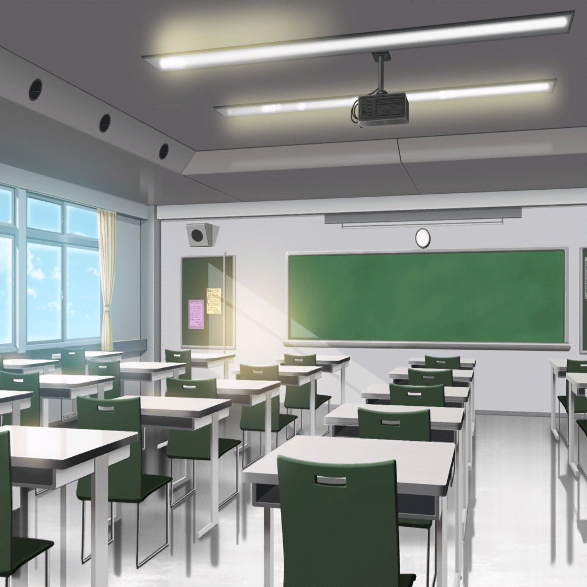

羽丘女子学園 1-B
巴
（あぁ、寒い……なんか体調がおかしいけど……
ひょっとして……風邪でも引いたかな……？）
巴
あ、あの、先生……
先生
どうしましたか、宇田川さん……あら？
顔色悪いですね……
巴
実は、さっきからずっと寒気がしてて……
先生
寒気……
ひょっとしたら熱があるんじゃないですか？
巴
（……っ、ダメだ……体の震えが止まらないっ。
絶対熱あるな……これは……）
先生
もしきついようでしたら、早めに早退していいですよ？
この時期の風邪をこじらせたら、大変ですからね
巴
……はい。
それじゃあ……すみませんけど……

休み時間
屋上
モカ
トモちん大丈夫かな～？
４０度近く熱があったらしいよ～
ひまり
で、結局、授業中に早退しちゃったの。
さすがにキツイもんね、そんなに熱があったら……
つぐみ
そうだったんだ……
それは、心配だね……
つぐみ
私、学校が終わったら、
お見舞いに行ってこようかな……
ひまり
そ、それなら私も一緒に行く！
モカと蘭も一緒に行かない？ 巴、絶対元気出ると思うから！
モカ
お見舞い～？
行っていいのかな～？
ひまり
え？ なんでなんで？
お見舞いに行って看病してあげたら、
巴だって早くよくなると思うけど……？
蘭
やめときなよ
ひまり
……蘭？
蘭
巴の性格、考えてみなよ。
逆に気をつかわせるだけだから
つぐみ
あ……そっか。
巴ちゃんって周りに気をつかうタイプだから、
かえって迷惑かけちゃうかもね……
ひまり
そう言われてみれば、たしかにそう……かも……
モカ
やっぱり風邪には睡眠が１番だよ～。
今日は、ゆっくり寝かしてあげよ～
つぐみ
う、うん、そうだね……
ひまり
……あ！ 巴からメールだ！
つぐみ
巴ちゃん、なんだって？
ひまり
え、え～と……
ひまり
『ひまりのことだから、
お見舞い行くとか思ってるかもしれないけど、
風邪がうつるといけないから、ホントに来ないでいいよ！』
ひまり
……だって。
あはは、私のこと、お見通しだったみたい
モカ
さっすが、トモちん。風邪を引いてても鋭いね～
ひまり
それじゃあ、お見舞いはやめておこうか……
巴がわざわざ連絡してくれたんだもん、
迷惑かけちゃいけないよね
蘭
それがいいと思う
ひまり
はい、それじゃあ、緊急ミーティングかいさ～ん！
つぐみ
（とは言っても……やっぱり心配だな……
早くよくなってほしいな……）

宇田川家 リビング
巴
はぁ……ただいま……やっと着いた。
あぁぁ……どんどん寒気がひどくなってきた……
巴
うわぁ……こんなときに限って薬が切れちゃってる……
巴
あこ……もう学校終わってる……よな……？
ちょっと、帰りに薬……買ってきてもらおう……

ショッピングモール
あこ
ん？ おねーちゃんからメールだ。
こんな時間にめずらしいな、なんだろ……？
あこ
……えっ！？ そ、そんなに熱があるのっ！？
あこ
え、えっと……
薬とスポーツドリンクを買って帰ればいいんだね？
……了解っ！
あこ
あ、あとはアイスも買っていこうっと！
風邪引いてる時って、無性にアイスを食べたくなるもんね！
あこ
おねーちゃん！
今、あこが薬とスポーツドリンク、
それにアイスも持って帰るからねっ！
あこ
く、薬屋さんは……えっと、そうだ、向こうだっ！
おねーちゃんっ、もうちょっとだけ待っててね～！

商店街
あこ
はぁ、はぁ、はぁ！
あとちょっとだよ、おねーちゃんっ。
もうちょっとであこ、お家につくからね！
沙綾
あれ、あこじゃん？
そんなに急いでどうしたの？
あこ
あ、さあやちゃん！
おねーちゃんがなんか風邪引いちゃって、
すっごい熱が出ちゃったみたいなの！
沙綾
えっ、そうなんだ！？
巴が熱出すなんてめずらしいね……大丈夫かな？
沙綾
あ！ だから急いでたんだよね？
ご、ごめんね、引き止めちゃって！
あとで、風邪のときでも食べやすそうなパン持っていくから！
あこ
ありがとー、さあやちゃん！
それじゃあ、あこ、行くねっ！